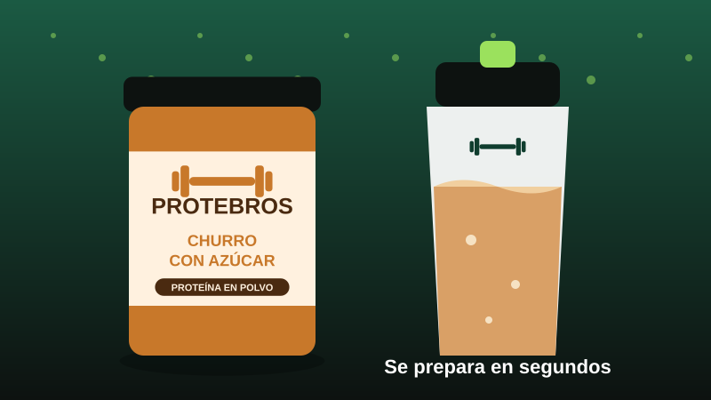
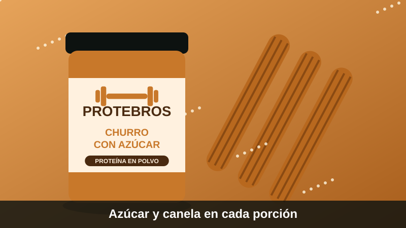
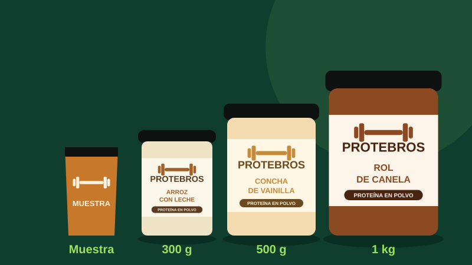

1
Sabores diferentes
Inspirados en postres y panes mexicanos que todos conocemos.
ProteBros es proteína en polvo con sabores inspirados en los postres y panes que nos gustan: arroz con leche, concha de vainilla, churro y rol de canela. Para complementar tu alimentación de forma práctica y rica.
Ver productos y precios Ver comercial
Cuatro sabores que no vas a encontrar en otra marca, en cuatro presentaciones.




Nuestra propuesta combina variedad, calidad y una presentación moderna.
Inspirados en postres y panes mexicanos que todos conocemos.
Etiquetas con ingredientes, contenido nutricional y modo de uso.
Desde una muestra individual hasta el bote de 1 kg.
Una marca pensada para jóvenes y adultos que entrenan.
Conoce ProteBros en un minuto.
Revisa los cuatro sabores, sus presentaciones y precios.
Ver productos Hacer un pedido